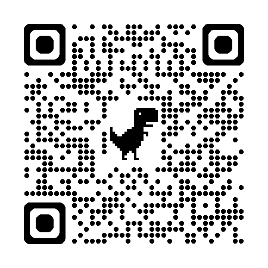
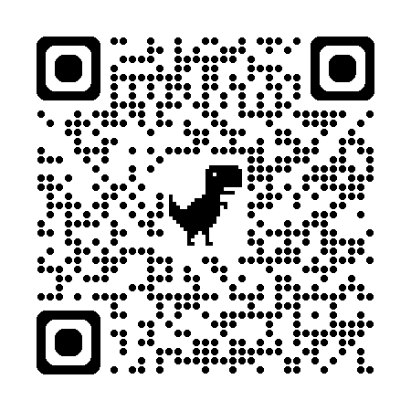
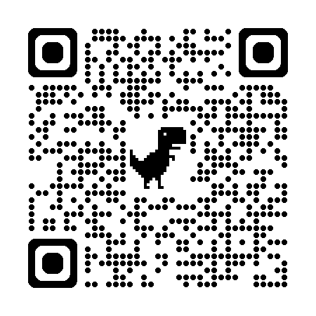

Introducción
 Imagina a Laura, una estudiante de grado 10 apasionada por la tecnología. Un día, mientras navegaba por internet, encontró una página web que le llamó la atención. Quiso saber cómo estaba hecha, qué había detrás de ese diseño, cómo funcionaban los botones y por qué todo parecía tan bien organizado. Fue ahí cuando decidió aprender sobre programación web.
Imagina a Laura, una estudiante de grado 10 apasionada por la tecnología. Un día, mientras navegaba por internet, encontró una página web que le llamó la atención. Quiso saber cómo estaba hecha, qué había detrás de ese diseño, cómo funcionaban los botones y por qué todo parecía tan bien organizado. Fue ahí cuando decidió aprender sobre programación web. Laura descubrió que no siempre necesitaría que alguien le diga exactamente qué hacer para aprender algo nuevo. Comprendió que, en un mundo que cambia tan rápido, especialmente en temas como la tecnología, lo más importante es saber cómo aprender por uno mismo. Desde ese momento, ya no solo estudiaba para pasar una materia, sino para crecer como persona, adaptarse a los cambios y prepararse mejor para el futuro.

Objetivos de Aprendizaje
Al finalizar el estudio de este Objeto Virtual de Aprendizaje, estarás en capacidad de:
-
🎯
Definir y explicar el concepto de aprendizaje autónomo, destacando su importancia en el contexto educativo y profesional actual, especialmente en el campo de la programación web. El texto busca que los lectores comprendan qué es, sus características, sus fases, los roles que implica (estudiante y docente), sus beneficios, desafíos y cómo se aplica en la práctica.
-
🎯
Comprender el concepto y las características del Aprendizaje Autónomo, reconociendo la importancia de la autogestión, la motivación intrínseca, la responsabilidad personal y la autorreflexión en el proceso de aprendizaje.
-
🎯
Identificar la relevancia del Aprendizaje Autónomo en el contexto actual, especialmente frente a los avances tecnológicos, los cambios en el mercado laboral y las nuevas modalidades educativas como la virtualidad.
-
🎯
Aplicar estrategias y fases del Aprendizaje Autónomo (diagnóstico, formulación de objetivos, planificación, ejecución y evaluación) para fortalecer la autonomía, la autorregulación y el pensamiento crítico en el estudio y la práctica, particularmente en áreas como la programación web.
Contenido
Explora la siguiente presentación interactiva y el material de apoyo del tema:
Actividades
Pon en práctica lo aprendido: selecciona una respuesta por pregunta y pulsa «Calificar».
Evaluación
Comprueba lo que aprendiste en este OVA. Selecciona la respuesta correcta para cada pregunta.
Recursos para profundizar
Para ampliar tu conocimiento sobre ecuaciones y desigualdades, te recomendamos explorar los siguientes enlaces y documentos:
-
Aprendizaje Autónomo
Ir al recurso
-
¿Qué es el Aprendizaje Autónomo?
Ir al recurso
-
Libros de Aprendizaje Autónomo
Ir al recurso
Bibliografía
Knowles, M. S. (1975). Teoría del Aprendizaje Autodirigido de Knowles. New York: Association Press.
Obra pionera sobre el Aprendizaje Autodirigido, clave para comprender el rol activo del aprendiz adulto.
Salas Parrilla M. (2022). Técnicas de estudio para Secundaria y Universidad..Madrid: Alianza Editorial, S.A.
Adiestrar al alumno en el manejo de una serie de técnicas y hábitos de estudio para lograr, a través de la práctica, una mejora paulatina, pero notoria, de su rendimiento intelectual y académico.